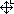
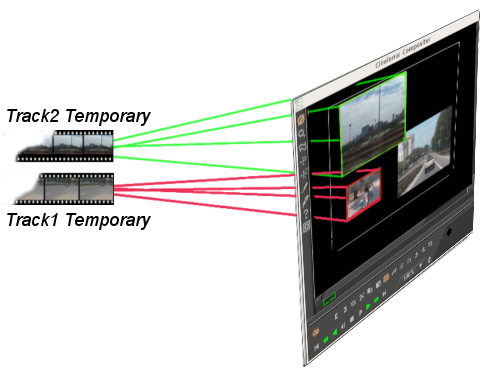
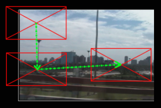
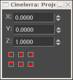
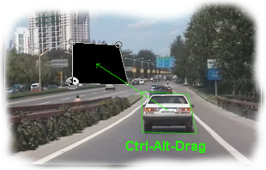

y una luz rectangular.
y una luz rectangular.
| [ << ] | [ >> ] | [Top] | [Contents] | [Index] | [ ? ] |
Es una ventana que muestra la salida de la línea de tiempos. Es la interfaz para la mayoría de las operaciones de composición o para las operaciones que afectan el aspecto de la salida de la línea de tiempos. Las operaciones que se realicen en el Compositor afectan a la línea de tiempos pero no a los clips.
La salida de vídeo tiene varias funciones de navegación. El tamaño del vídeo de salida puede estar bloqueado al tamaño de la ventana o desbloqueado y con barras deslizantes para facilitar la observación. Se puede hacer zoom sobre la salida de vídeo, y panorámicas. Navegar la salida de vídeo de esta manera no afecta a la salida de una operación de renderizado; simplemente cambia el punto de vista en la ventana del Compositor.
Si está desbloqueado respecto al tamaño de la ventana, se puede pinchar con el botón intermedio del ratón y arrastrar la imagen para cambiar el punto de vista de la misma.
Se puede hacer zoom (aumentar y disminuir) sobre la salida de vídeo pulsando las teclas + y -.
Bajo la salida de vídeo hay copias de muchas de las funciones disponibles en la
ventana principal. Además, hay un menú de zoom
y una luz rectangular.
El menú de zoom ofrece todos los posibles valores de aproximación y, con la opción Auto, la posibilidad de bloquear el tamaño de la salida de vídeo al de la ventana. El menú de zoom no afecta al tamaño de la ventana. Si con la opción Auto activada se redimensiona la ventana, el zoom de la salida de vídeo cambiará para ajustarse.
La luz rectangular se enciende de color rojo mientras se está renderizando. De esta manera podemos saber si la salida que muestra el Compositor es la más actual.
Si se pulsa con el botón derecho del ratón en cualquier lugar de la ventana de salida, aparece un menú con todos los niveles de zoom y algunas opciones más. En el caso concreto de que el zoom esté en modo Auto, al cambiar el zoom con este menú auxiliar se redimensionará toda la ventana, no sólo el tamaño de la salida de vídeo.
Las opciones Restaurar cámara y Restaurar proyector permiten centrar la cámara y el proyector. See section Composición.
La opción Ocultar controles oculta todo excepto la imagen de vídeo.
A la izquierda de la salida de vídeo hay una barra de herramientas exclusiva de la ventana del Compositor. Esta barra de herramientas ofrece las siguientes funciones:
Deshabilita posibles cambios en la salida del compositor debido a clicks realizados en la ventana. Es otro nivel más de seguridad, además del botón para desmontar pistas, para evitar cambios indeseados.
Esta herramienta  permite aproximarse y alejarse
a la salida del compositor sin redimensionar la ventana. Si la salida de vídeo está
bloqueada al tamaño de la ventana, al pulsar sobre ella con la lupa se desbloquea
y aparecen barras deslizantes para facilitar la inspección.
permite aproximarse y alejarse
a la salida del compositor sin redimensionar la ventana. Si la salida de vídeo está
bloqueada al tamaño de la ventana, al pulsar sobre ella con la lupa se desbloquea
y aparecen barras deslizantes para facilitar la inspección.
Se puede acercar el zoom pulsando con el botón izquierdo.
Se puede alejar el zoom pulsando CTRL - click.
La rueda del ratón también sirve para acercar o alejar el zoom.
Ésta  es la herramienta de edición de máscaras, See section Máscaras.
Habilite la ventana de información,
es la herramienta de edición de máscaras, See section Máscaras.
Habilite la ventana de información,  , para
ver las opciones relativas a esta herramienta.
, para
ver las opciones relativas a esta herramienta.
La herramienta  sirve para ajustar la cámara,
como se describe en See section La cámara y el proyector. Habilite la ventana de información,
, para ver las opciones relativas a esta herramienta.
La herramienta  sirve para ajustar el
proyector, como se describe en See section La cámara y el proyector.
This tool brings up the projector
editing tool See section La cámara y el proyector. Habilite la ventana de información,
, para ver las opciones relativas a esta herramienta.
sirve para ajustar el
proyector, como se describe en See section La cámara y el proyector.
This tool brings up the projector
editing tool See section La cámara y el proyector. Habilite la ventana de información,
, para ver las opciones relativas a esta herramienta.
La herramienta  sirve para cortar capas o la
salida, como se describe en See section Recorte. La ventana de información,
, debe estar habilitada para poder
usar esta herramienta.
sirve para cortar capas o la
salida, como se describe en See section Recorte. La ventana de información,
, debe estar habilitada para poder
usar esta herramienta.
Proporciona un mecanismo para escoger un color de los que aparecen en la pantalla del
Compositor. El selector de color detecta el color sobre el que está situado y lo
almacena de manera temporal. La ventana de información, ,
si está habilitada, muestra el color seleccionado actualmente. Pulse en cualquier punto
de la salida de vídeo para obtener el color en dicho punto.
El selector de color no sólo permite ver áreas que han sido recortadas,s ino que su
valor se puede aplicar a muchos efectos. Diferentes efectos gestionan la información del
selector de color de maneras distintas.
El botón de ayuda, , sólo funciona en
combinación con otros controles del compositor. Basándose en el control que esté
activo en cada momento, el botón de ayuda mostrará un diálogo u otro.
Las herramientas con diálogos de información son:
La herramienta  dibuja las zonas seguras en la
salida de vídeo. Esto no afecta a la salida final al renderizar. Véase See section Zonas seguras.
dibuja las zonas seguras en la
salida de vídeo. Esto no afecta a la salida final al renderizar. Véase See section Zonas seguras.
Gran parte del programa Cinelerra está orientado a la composición. ¿Qué es la composición? Cambiar la resolución de una película o el formato (por ejemplo, de 4/3 a 16/9), dividir una pantalla, entrar con un fundido o salir con otro, entre otras cosas, todo eso son operaciones de composición en Cinelerra. Cinelerra detecta las operaciones de composición y cuando visualiza la película usa el motor de composición. Si no, usa el decodificador más rápido que encuentre en su hardware.
Las operaciones de composición se hacen en la línea de tiempos y en la ventana del Compositor. Existen atajos en la ventana de Recursos para cambiar algunos atributos de composición. Cuando ya hay archivos de vídeo en la línea de tiempos, la ventana del Compositor es un buen sitio para componer la película.
En la ventana del Compositor, las funciones más importantes son el botón
de la cámara, , y el botón del proyector,
. Controlan la operación de la cámara y el proyector.
Las rutinas de composición de Cinelerra usan una copia provisional, fotogramas de vídeo
almacenados temporalmente en memoria sobre los que se realiza todo el procesamiento
gráfico. En el proceso de composición en Cinelerra, la cámara determina de dónde, en el
vídeo original, se copian los datos (fotogramas) provisionales. El proyector determina dónde van los
datos provisionales, en la salida final.

El proceso es como si escaneáramos un rollo de película antigua, un fotograma cada vez, y luego, con un programa de retoque de imágenes (por ejemplo, Gimp) retocáramos digitalmente la imagen escaneada aplicándole varios filtros. Esta imagen escaneada que estamos imaginando sería el documento provisional, sobre el que aplicamos nuestras modificaciones, respetando así el vídeo original. Cuando la imagen ha sido transformada por los filtros, como por ejemplo uno de corrección de color, la proyectamos terminada en un nuevo rollo de película, creando así una versión "modificada" del original.
Cada pista tiene datos provisionales diferentes, definidos por el tamaño de la pista. Al redimensionar las pistas puede crear pantallas divididas en dos o más secciones, panorámicas y zooms.

Representación gráfica del proceso de composición.
Al usar la cámara y el proyector en la ventana del compositor, la pista afectada es la primera pista con grabación activa es la pista afectada. Incluso si es una pista completamente transparente, aún así es al pista afectada. Si existen múltiples pistas de vídeo, la forma más sencilla de seleccionar sólo una pista en la que editar es pulsar MAY-click en el icono de grabación de la pista. Así se aisla la pista.

El propósito del proyector es situar los contenidos provisionales en la salida del proyecto. Sirve por lo tanto para componer varias fuentes de varias pistas en una única pista de salida.
Tanto la cámara como el proyector se caracterizan por sus marcos o lentes, dos rectángulos que determinan qué se coge del vídeo original como datos provisionales (en el caso de la cámara) y en qué posición en la salida se vuelcan los datos provisionales, una vez editados (en el caso del proyector).

Al pulsar el botón proyector se habilita el control en la ventana del compositor y ya se puede ajustar el proyector. En la ventana de vídeo del compositor aparece una caja con guías. Si se arrastra con el ratón en cualquier punto de la ventana de vídeo, las guías se desplazan junto al vídeo (el vídeo puede moverse un poco más lento). Si se mantiene la tecla MAY pulsada mientras se arrastra el ratón sobre la ventana, las guías se encogen o aumentan junto con el vídeo. Si ya ha posicionado el vídeo con el proyector (juegue todo lo que le apetezca), está preparado para dominar la cámara.
Al pulsar el botón de la cámara, , se habilita el control en la ventana del compositor. Aparecen unas guías que muestran la posición de la cámara en relación a posiciones pasadas y futuras de la propia cámara, pero no en relación al vídeo original. Si se intentan arrastrar las guías de la cámara se comprobará que no se mueven las guías, sino la localización del vídeo dentro de la referencia de la cámara.
La mirilla es una ventana en la cámara, como una rendija en la lente, que enmarca el área de vídeo original que se a escanear. La mirilla se representa como un marco rojo con barras diagonales cruzadas.

La mirilla

Tamaños de mirilla
El tamaño de la mirilla depende del tamaño de la pista actual, no del vídeo original. Si es pequeña (640x400) captura un área pequeña. Si la pista actual es grande (800x200), captura un área mayor que el vídeo original y rellena el espacio vacío con regiones vacías de color blanco.
Cuando ya está definida la mirilla se debe posicionar la cámara justo sobre el área de vídeo original que nos interesa. Para controlar la posición de la cámara:
Al arrastrar el ratón sobre la mirilla en la ventana del compositor (aunque al principio parezca extraño), la mirilla no se mueve pero sí lo hace el trozo de vídeo al otro lado de la cámara. Es como si la ventana fuera nuestra cámara, y al moverla mientras grabamos viéramos moverse la imagen al otro lado de la lente.

En la ventana del compositor, la cámara siempre se muestra
centrada, lo que se mueve es el vídeo al otro lado.
Por ejemplo, si mueve la cámara hacia abajo, la mirilla está moviéndose hacia abajo respecto al vídeo, pero si mientras movemos la cámara hacia abajo estamos mirando por el visor de la cámara lo que veremos será que el vídeo está subiendo. Por la misma razón, si mueve la cámara hacia la derecha, el vídeo parecerá moverse hacia la izquierda.
Nota: Las guías muestran la posición de la cámara en relación a posiciones pasadas y futuras de la cámara, no en relación al vídeo original.
En la ventana del compositor hay un menú contextual con opciones que afectan a la cámara y al proyector. Pulse con el botón derecho del ratón sobre la imagen de vídeo para acceder a él.
Se pueden realizar algunas operaciones con la cámara y el proyector
que no aparecen en el menú contextual y no se representan en las capas de vídeo.
Se accede a ellas en la Información de la herramienta. La mayoría de las
herramientas del Compositor poseen una ventana de información que se muestra
al pulsar el símbolo de interrogación .

La ventana de información de la cámara y el proyector.
En el caso de la cámara y el proyector, la ventana de información muestra las coordenadas z, y y z. Con la rueda del ratón o directamente escribiendo texto, se pueden posicionar con precisión la cámara y el proyector. Además, se definen nueve tipos de justificación para facilitar el posicionamiento. Una operación frecuente es justificar la proyección a la esquina superior izquierda tras reducir la imagen. Se usa al reducir el tamaño de un vídeo con ajuste de la razón de aspecto.
 Izquierda
Izquierda
 Centrado horizontal
Centrado horizontal
 Derecha
Derecha
 Arriba
Arriba
 Centrado Vertical
Centrado Vertical
 Abajo
Abajo
El efecto de traslación permite conversión simultánea de la razón de aspecto y reducción, pero es más fácil de usar si el vídeo reducido se pone en la esquina superior izquierda de la imagen provisional, en lugar de en el centro. El tamaño de la pista se ajusta al tamaño original del vídeo, y se centra la cámara. El tamaño de la salida será el que queremo para el vídeo reducido de salida. Así se obtiene la porción central del vídeo recortada sin usar efectos.
A continuación se debe arrastrar el efecto de traslación sobre la pista de vídeo. Se ajustan las dimensiones de entrada del efecto de traslación al tamaño original y las dimensiones de salida al tamaño reducido que deseamos obtener. Para poner el vídeo reducido en el centro de la imagen que muestra el proyector requeriría un desplazamiento de los valores de salida de x, y según un cálculo complicado. En lugar de eso, dejamos los valores de salida de x e y a 0 y usamos la ventana de información de la herramienta proyector.
Sólo con seleccionar justificación a la izquierda y justificación arriba , el proyector muestra la imagen reducida de la esquina superior izquierda de la imagen provisional en el centro de la salida.
Las máscaras permiten seleccionar una región del vídeo. Seleccionar una región concreta dentro de la imagen es útil si hay algo que se desea mostrar u ocultar, o aplicar un efecto sobre áreas concretas de los fotogramas. Se puede retrasar ligeramente una copia de una pista de vídeo y mostrar esa copia sin enmascarar en zonas donde una copia tiene interferencias pero la otra no. Se puede necesitar corrección del color en una sección de una serie de fotogramas pero no en todo el área de los fotogramas. Las máscaras también sirven para eliminar micrófonos, aviones o personas que no deberían estar.
El orden del proceso de edición afecta a las tareas que se pueden realizar con las máscaras. Principalmente, las máscaras se realizan en los datos provisionales, tras aplicar los efectos pero antes del proyector. En consecuencia, se pueden enviar varias pistas a una sola pista con máscara y proyectarlas con la misma máscara.
Nuestro proceso de composición tiene ahora una etapa adicional: la de aplicación de máscaras. Puede haber hasta 8 máscaras por pista. Cada máscara se define por separado, aunque todas realizan la misma operación, sea adición o substracción.

Proceso de composición con máscaras.
Para definir una máscara, active el botón Editar máscara
en la ventana del compositor. Con esta opción activa, arrastre el ratón (pulsando
el botón izquierdo) sobre la ventana de vídeo.
IMPORTANTE: Debe escoger fotogramas clave automáticos, si desea mover una máscara en el tiempo. Si no selecciona fotogramas clave automáticos, la posición de la máscara será la misma incluso aunque la edite en diferentes sitios de la línea de tiempos.

Pulse o arrastre nuevamente en otros puntos de la imagen para crear nuevos puntos de la máscara. Aunque no sea el comportamiento convencional de las curvas de Bezier, esta interfaz para la máscara muestra en tiempo real cuál va a ser el comportamiento de la máscara.
Los puntos que ya se han creado se pueden mover arrastrándolos. Para ello se deben arrastrar con el ratón, manteniendo pulsada la tecla CTRL.

CTRL-arrastrar permite mover los puntos existentes a
nuevas posiciones, modificando así la geometría de la máscara.
Si únicamente se añaden nuevos puntos o se desplazan los ya existentes, la máscara estará siempre delimitada por una línea poligonal. Para convertir los tramos rectos en curvas de Bezier es necesario usar los puntos de anclaje de la curva. Se accede a estos puntos arrastrando uno de los puntos ya existentes mientras se mantiene pulsada la tecla MAY. Para mover estos puntos y cambiarlos de posición, basta con arrastrarlos mientras se mantiene pulsada la tecla MAY.

Los anclajes de la curva de Bezier se activan
arrastrando mientras se pulsa la tecla MAY. Así se
pueden crear líneas curvas entre puntos de la máscara.
Una máscara ya existente se puede mover entera pulsando las teclas ALT y CTRL a la vez, mientras se arrastra con el ratón. La edición de máscaras en Cinelerra es idéntica a la edición de máscaras en El Gimp, excepto que en Cinelerra el efecto de la máscara siempre está activado.

CTRL-ALT y arrastrar permite mover una máscara
entera a una nueva posción en la imagen.
Las máscaras tienen muchos parámetros más, que no se pueden representar con
superposición de vídeo. Estos parámetros se representan en la ventana de información
de herramienta de máscaras. Esta ventana con las opciones aplicables a la máscara,
, aparece al pulsar el botón con forma de
interrogación .

Ventana de opciones de máscara.
El modo de la máscara determina si la máscara elimina datos o hace visibles los datos. Si el modo es subtractivo, la máscara provoca la desaparición del vídeo sobre el que se aplica. Si el modo es aditivo, la máscara hace visible el vídeo sobre el que se aplica e invisible todo lo que está fuera de la máscara.

Modo de la máscara
El valor de la máscara determina cuán extrema es la adición o substracción aplicada. En modo substractivo, valores mayores eliminan más alfa. En modo aditivo, valores mayores hacen más brillante al región en la máscara, dejando la región exterior siempre igualmente invisible.

Valor de la máscara.
El número de la máscara identifica cuál de las 8 posibles máscaras estamos editando. Cada pista tiene hasta 8 posibles máscaras. Al pinchar o arrastrar en la ventana del compositor, sólo se está editando una de las máscaras. Cambiando el número de máscara, se pasa a editar otra máscara. Las máscaras con números diferentes al de la que estamos editando siguen activas, pero no se ve la línea blanca porque no se pueden editar. Al cambiar el número de máscara se escoge una máscara de entre todas las posibles para trabajar sobre ella, por eso las demás no se pueden modificar mientras tanto.
Al usar múltiples máscaras, se aplica la unión de sus efectos (relación OR entre sus respectivos efectos). Todas las máscaras de una misma pista usan el mismo modo y valor.
Los bordes de una máscara son líneas rectas por defecto, pero esto rara vez es lo que deseamos. El parámetro feather determina cuántos píxeles se debe difuminar el borde de la máscara. Así se crean bordes parcialmente transparentes, que toman aspecto borroso o difuminado, pero que a cambio son más lentos de renderizar.

Parámetro de difuminado
Finalmente, hay parámetros que afectan a un solo punto de la máscara actual, y no a toda la máscara. Son el comando Borrar y los parámetros x, y. Afectan al punto activo, que es el último punto arrastrado o creado en la ventana del compositor. Se puede activar cualquier punto (reemplazando al que estaba activo hasta ese momento) pinchando con el ratón en sus inmediaciones mientras se mantiene pulsada la tecla CTRL. Cuando se ha activado un punto, Borrar lo elimina y x, y permiten reposicionarlo con precisión, escribiendo su nueva posición.
El recorte cambia el valor de las dimensiones de salida y el proyector para reducir
el área visible del dibujo. Active el botón Recorte
y la ventana de información de herramienta
en la ventana del compositor para visualizar el diálogo de la herrmaienta recorte.

Diálogo de la herramienta recorte
Pinche y arrastre en cualquier punto de la imagen para definir el área a recortar. Se dibuja un rectángulo sobre el vídeo. Volviendo a arrastrar en cualquier sitio, se reemplaza dicho rectángulo por uno nuevo. También se puede mover una esquina cualquiera arrastrándola con el ratón.

Área de recorte.
Se puede mover el rectángulo entero (sin deformarlo) a una nueva posición, pulsando la tecla MAY mientras se arrastra con el ratón.
La ventana de información de la herramienta permite aún más precisión, introduciendo las coordenadas numéricas. Cuando el rectángulo esté adecuadamente construido, basta con pulsar el botón Do it (Ejecutar) para realizar la operación de corte.
Nota: Las coordenadas X1,Y1 y X2,Y2 del diálogo de recorte permiten introducir mediante el teclado las coordenadas de las esquinas superior izquierda y la inferior derecha, que son suficientes para definir el rectángulo completamente.
En muchos dispositivos de electrónica de consumo, los bordes de la imagen
se recortan, y dentro queda una región que no siempre es cuadrada (es decir,
no siempre es igual que la vemos en la ventana del compositor). Los bordes
están pensados para que haya algo de espacio adicional. Se pueden mostrar estos
bordes activando el botón Mostrar zonas seguras, .
Es conveniente intentar que los títulos estén siempre dentro del rectángulo
interior, y la acción (o el contenido más interesante para el espectador) dentro del
rectángulo exterior.
Cada pista de vídeo tiene un modo de superposición, al que se puede acceder expandiendo la pista. El modo de superposición es un menú desplegable a la izquierda de la región expandida, bajo el "fader" (control de atenuación). Cuando no está desplegado, muestra un icono que indica cuál es el modo de superposición actual.
Pulse sobre el botón de expansión de la pista,  ,
para ver todas las opciones del vídeo, si no encuentra el modo de superposición.
El modo de superposición de las pistas de vídeo es normal por defecto. Puede escoger
otros modos pulsando el botón de modo de superposición y seleccionando uno de los que
se le ofrecen.
,
para ver todas las opciones del vídeo, si no encuentra el modo de superposición.
El modo de superposición de las pistas de vídeo es normal por defecto. Puede escoger
otros modos pulsando el botón de modo de superposición y seleccionando uno de los que
se le ofrecen.
Los modos de superposición se procesan en la etapa de proyección, cuando se activa el proyector, dentro de lo que sería el proceso anteriormente descrito de composición. A continuación se describen los diferentes modos de superposición.
El tamaño de la película provisional y el tamaño de la salida son independientes en nuestro proceso de composición, lo cual encaja bien con todo lo explicado hasta ahora. La mirilla de la cámara es el tamaño de la película provisional. Los efectos se procesan sobre dicha película temporal y les afecta el tamaño que ésta tenga. La proyección de esta película es lo que se renderiza en la salida final, y se ve determinada por el tamaño de la salida. Si la película provisional es más pequeña que la salida, la película temporal se verá rodeada de una región blanca en la salida. Si es más grande que la salida, saldrá recortada.
El tamaño de la pista provisional se define según el tamaño de la pista. Cada pista tiene un tamaño diferente. Pulsando con el botón derecho del ratón sobre una pista, se hace aparecer el menú de dicha pista. Puede pulsar Redimensionar pista para redimensionar al pista a cualquier tamaño arbitrario. De manera alternativa, se puede escoger Redimensionar al tamaño de salida para hacer la pista del mismo tamaño que la salida.

La ventana de redimensionamiento de pista.
Por ejemplo, la próxima imagen muestra cómo una pista de vídeo y la salida de un proyecto del mismo tamaño se ven en el compositor.

Tamaño de la salida de vídeo del proyecto y
pista de vídeo de iguales dimensiones (720x480)
Al redimensionar una pista, su aspecto en el compositor varía en proporción.
Reducir la pista (a 640 x 400, por ejemplo) y mantener el mismo tamaño de salida para el proyecto hace que la pista aparezca más pequeña en el compositor y enmarcada por un área blanca.

Nueva pista (640x400), más pequeña
que la salida del proyecto (720x480)
Agrandar el tamaño de la pista (a 800 x 560, por ejemplo) y mantener el mismo tamaño de salida en el proyecto hace que la pista aparezca más pequeña en el compositor y recortada al tamaño de la salida.

Nueva pista (800x560), recortada al
tamaño de la salida del proyecto (720x480).
Aprovechando la relación entre los tamaños de la pista y el proyecto se puede reducir o aumentar el tamaño de una pista concreta respecto a la salida final, y así crear "efectos" visuales como pantallas divididas, panorámicas y zooms.
El tamaño de la salida se ajusta en el menú Fichero->Nuevo al crear un proyecto nuevo o en Preferencias->Formato. En la ventana de recursos hay otra forma de cambiar el tamaño de la salida. Pulsando con el botón derecho en un recurso de vídeo se puede seleccionar la opción Match project size para adecuar la salida a este recurso. Al crear pistas nuevas el tamaño de pista siempre será el tamaño de salida especificado por estos métodos que acabamos de explicar.
Al renderizar, el tamaño de la salida del proyecto será el de la pista de vídeo final en la que se renderiza la película provisional.
Si el tamaño de salida es mayor que el de la película provisional, entonces la imagen transferida desde la película provisional ocupará una parte de la pista de salida, quedando enmarcada por una región blanca.

Tamaño de la salida (en verde) mayor
que el de la película provisional.
Si el tamaño de la salida es menor que el de la película temporal, parte del vídeo temporal aparecerá recortado en la salida final.

Tamaño de salida demasiado pequeño para el vídeo provisional.
| [ << ] | [ >> ] | [Top] | [Contents] | [Index] | [ ? ] |
This document was generated by Raffa on octubre, 8 2007 using texi2html 1.76.